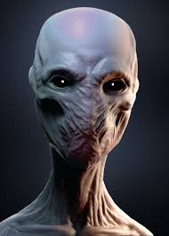
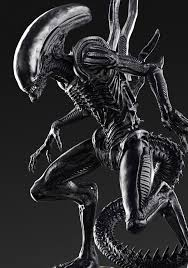

The Grey are the most common alien you will encounter. Alone they are easy to take on, they are vulerable to firearms and even melee attacks, but in groups is not advisable to take them on.
They have access to extremely advanced technology and to be reported to authories
Danger Class: Moderate

"Breathers"
Breathers are extremely intelligent and mobile beings. Their skin is thick and can withstand gunfire from most low-caliber weapons.
Breathers are easily recognisable by their extremly loud breathing.
If you hear their breathing, you should evacuate the area immediatly
Danger Class: High

"Hunters"
Hunters are the apex warriors of the alien species, they are living weapons and have great physical strength and agility.
Their skin is completly inpenitrable to all firearms to our knowledge but have a possible weakness to fire. Evacuate immediatly.